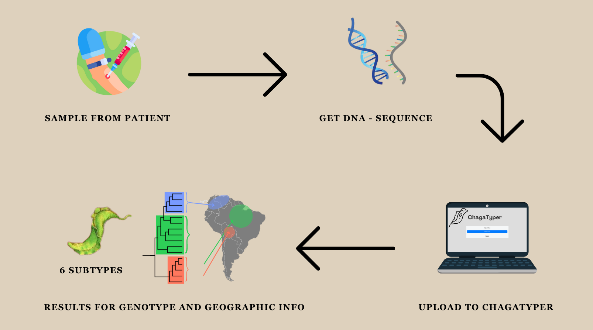

Acerca de
Nuestra plataforma está diseñada para permitirle obtener una comprensión más profunda de la Enfermedad de
Chagas y el Trypanosoma Cruzi.
Queremos brindarle las herramientas que necesitas para comprender mejor los patrones de la enfermedad.
Al utilizar los datos genómicos recopilados, podemos crear visualizaciones interactivas.
Nuestra misión es proporcionar un centro integral
y fácil de usar para rastrear y comprender la dinámica de la enfermedad.
Tómese un tiempo y explore nuestra primera maqueta. Le agradeceríamos
mucho que pudieran brindarnos sus comentarios en el enlace de la encuesta a continuación.
Tenga en cuenta que, a partir de ahora, las visualizaciones
no son interactivas y se utilizan como una forma de ver cómo se verá el sitio web en pleno funcionamiento.
Feedback survey
¿Qué pasa con tus datos?

Trypanosoma Cruzi
Información general sobre T. cruzi